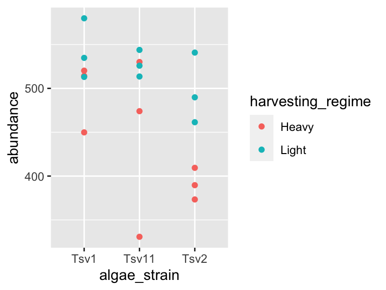

3 ggplot2
For visualization, we’re going to use ggplot2 - a powerful set of commands for plot generation. Let’s make sure we’ve got our data from the last chapter active in our current session:
algae_data_small <- filter(algae_data, chemical_species == "FAs")
algae_data_small
## # A tibble: 18 × 5
## replicate algae_strain harvesting_regime chemical_species abundance
## <dbl> <chr> <chr> <chr> <dbl>
## 1 1 Tsv1 Heavy FAs 520.
## 2 2 Tsv1 Heavy FAs 450.
## 3 3 Tsv1 Heavy FAs 514.
## 4 1 Tsv1 Light FAs 580.
## 5 2 Tsv1 Light FAs 535.
## 6 3 Tsv1 Light FAs 513.
## 7 1 Tsv2 Heavy FAs 373.
## 8 2 Tsv2 Heavy FAs 409.
## 9 3 Tsv2 Heavy FAs 390.
## 10 1 Tsv2 Light FAs 490.
## 11 2 Tsv2 Light FAs 541.
## 12 3 Tsv2 Light FAs 461.
## 13 1 Tsv11 Heavy FAs 474.
## 14 2 Tsv11 Heavy FAs 331.
## 15 3 Tsv11 Heavy FAs 530.
## 16 1 Tsv11 Light FAs 526.
## 17 2 Tsv11 Light FAs 514.
## 18 3 Tsv11 Light FAs 544.Great! Looks like we’re ready to go.
3.1 Setting up a ggplot
There are three steps to setting up a ggplot:
3.1.1 Step 1: Define the data you want to use.
We do this using the ggplot function’s data argument. When we run that line, it just shows a grey plot space. Why is this? It’s because all we’ve done is told ggplot that (i) we want to make a plot and (ii) what data should be used. We haven’t explained how to represent features of the data using ink.
ggplot(data = algae_data_small)
3.1.2 Step 2: Define how your variables map onto the axes.
This is called aesthetic mapping and is done with the aes() function. aes() should be placed inside the ggplot command. Now when we run it, we get our axes!
ggplot(data = algae_data_small, aes(x = algae_strain, y = abundance))
3.1.3 Step 3: Use geometric shapes to represent other variables in your data.
Map your variables onto the geometric features of the shapes. To define which shape should be used, use a geom_* command. Some options are, for example, geom_point(), geom_boxplot(), and geom_violin(). These functions should be added to your plot using the + sign. We can use a new line to keep the code from getting too wide, just make sure the + sign is at the end fo the top line. Again, use aes() to map your variables onto the geometric features of the shapes. Let’s try it:
ggplot(data = algae_data_small, aes(x = algae_strain, y = abundance)) +
geom_point(aes(color = harvesting_regime))
3.2 Geoms
3.2.1 Modifying geoms
In the last plot in the previous section, the points were a bit small, how could we fix that? We can modify the features of the shapes by adding additional arguments to the geom_*() functions. To change the size of the points created by the geom_point() function, this means that we need to add the size = argument. Here’s an example:
ggplot(data = algae_data_small, aes(x = algae_strain, y = abundance)) +
geom_point(aes(color = harvesting_regime), size = 5)
One powerful aspect of ggplot is the ability to quickly change mappings to see if alternative plots are more effective at bringing out the trends in the data. For example, we could modify the plot above by switching how harvesting_regime is mapped:
ggplot(data = algae_data_small, aes(x = algae_strain, y = abundance)) +
geom_point(aes(size = harvesting_regime), color = "black")
** Important note: Inside the aes() function, map aesthetics (the features of the geom’s shape) to a variable. Outside the aes() function, map aesthetics to constants. You can see this in the above two plots - in the first one, color is inside aes() and mapped to the variable called harvesting_regime, while size is outside the aes() call and is set to the constant 5. In the second plot, the situation is reversed, with size being inside the aes() function and mapped to the variable harvesting_regime, while color is outside the aes() call and is mapped to the constant “black”.
3.2.2 Using multiple geoms
We can also stack geoms on top of one another by using multiple + signs. We also don’t have to assign the same mappings to each geom.
ggplot(data = algae_data_small, aes(x = algae_strain, y = abundance)) +
geom_violin() +
geom_point(aes(color = harvesting_regime), size = 5)
As you can probably guess right now, there are lots of mappings that can be done, and lots of different ways to look at the same data!
ggplot(data = algae_data_small, aes(x = algae_strain, y = abundance)) +
geom_violin(aes(fill = algae_strain)) +
geom_point(aes(color = harvesting_regime, size = replicate))